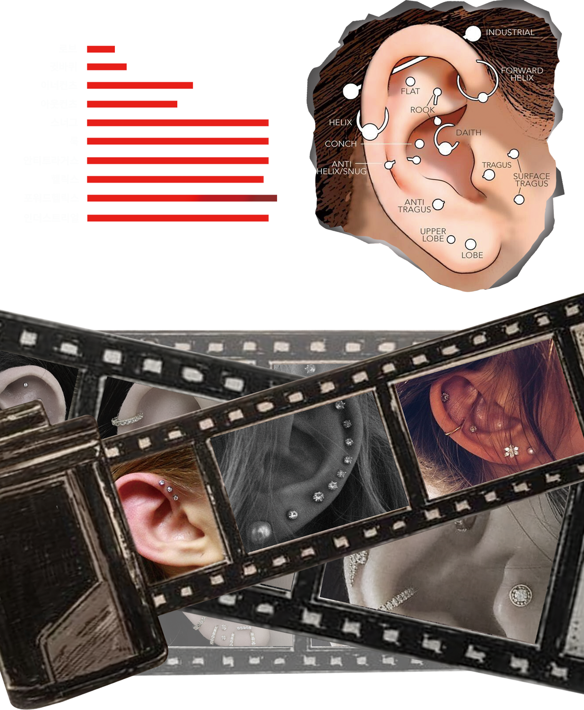
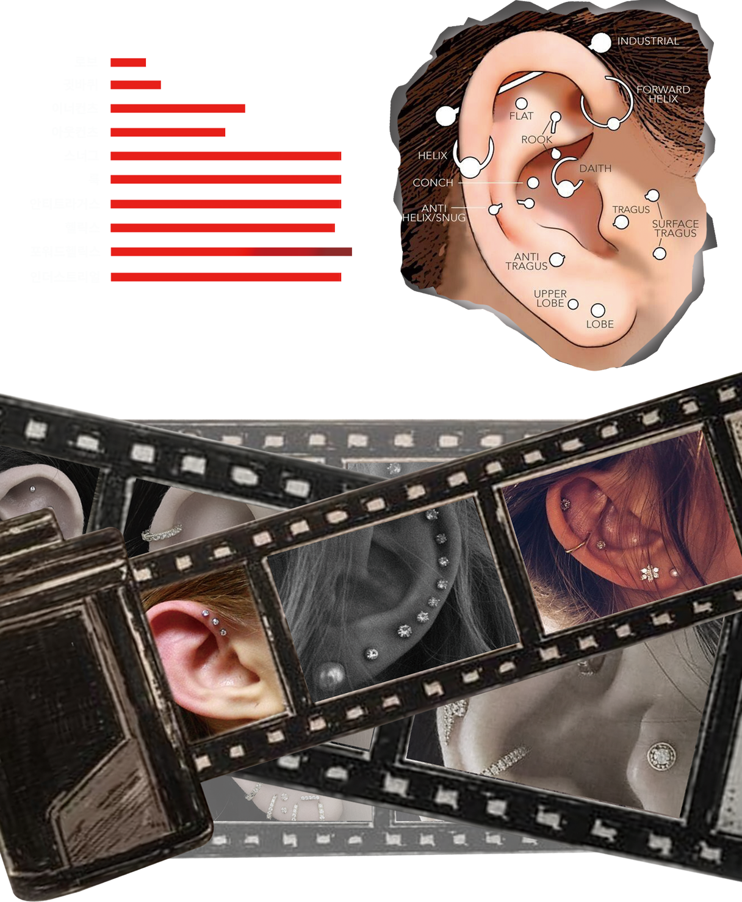

<ㅏ하하하>

<ㅏ하하하>
‘뚫고 나가다’라는 뜻의
라틴어 페르투수스에서 유래되었습니다.’
검은 피부에는 문신이 잘 보이지 않기 때문에 문신이 제대로 자리잡기 못한
아프리카와 그 밖에 지역에는 피어싱의 풍습이 수세기동안 이어졌다고 합니다.
그리고 인도와 중동, 북아프리카의 등지에서는 코걸이가 부족에서의 지위는
물론 부를 드러내는 하나의 상징으로 여겨졌다고 하네요.
원시사회에서는 신분의 상징이나 주술적인 의미로 여겼고,
일부 종교에서는 종교의식의 하나로,
또 어떤 곳에서는 미적 표현이나 장식용의 의미를 두었는데
아프리카의 원주민이나 일부 힌두교도들은
종교 의식으로 이마나 뺨. 혀 등의 신체 일부를
쇠창이나 은침을 이용해서 뚫는 행위가 있었습니다.